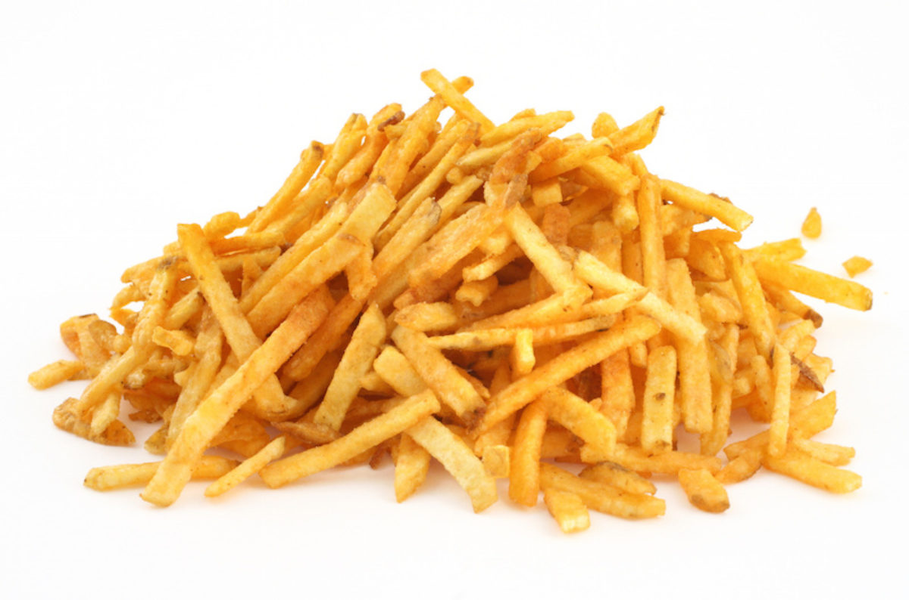

patatas fritas

Descripcion
Esta es la receta de unas patatas fritas
ingredientes
1 patata
2 cucharadas aove
sal
pasos
cortar patatas en tiras
poner aceite y calentarlo
poner las patatas
sazonar al gusto